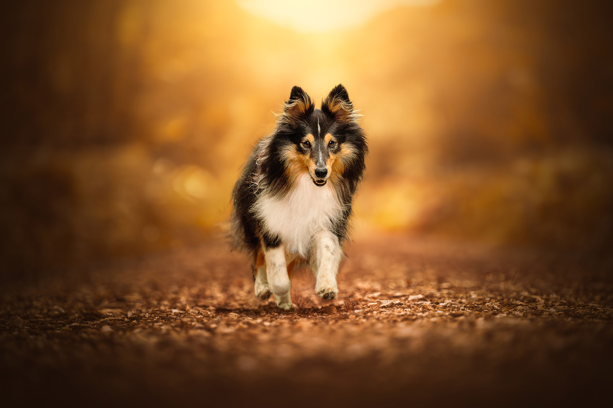
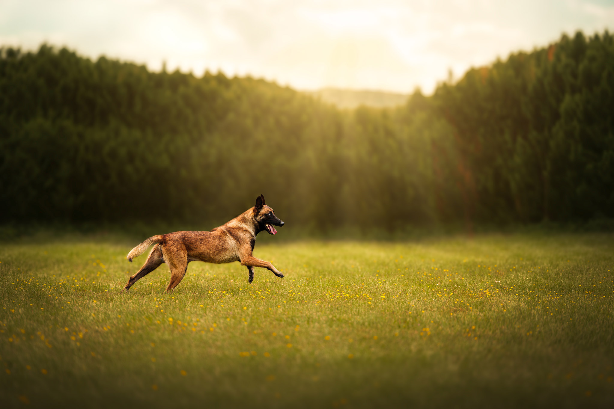

ENVOI DE VOTRE IMAGE
Vous me transmettez votre photographie et m’expliquez le résultat souhaité.
RETOUCHE & RESTAURATION PHOTOGRAPHIQUE
De la retouche artistique à la restauration de vos souvenirs, chaque image est travaillée avec précision pour préserver son histoire tout en révélant tout son potentiel.
RETOUCHE PHOTOGRAPHIQUE
Une photo, c’est une base pleine de possibilités.
Que vous souhaitiez simplement harmoniser vos images ou leur donner une ambiance plus marquée, chaque retouche est pensée pour refléter votre vision.
Lumière, couleurs, textures, atmosphère… tout est ajusté avec soin pour créer une image unique, cohérente et expressive.
L’objectif est simple : donner à vos photos l’émotion et la force qu’elles méritent.
Un tarif dégressif peut être appliqué pour plusieurs images.

Chaque projet étant unique, un devis peut être établi pour les demandes particulières (photomontages, retouches complexes, séries importantes…).
RESTAURATION D’ANCIENNES PHOTOS
Parce que certains souvenirs méritent une seconde vie.
Faites glisser le curseur pour découvrir la restauration.
Faites glisser le curseur pour découvrir la transformation.
RESTAURATION PHOTOGRAPHIQUE
Les souvenirs s’effacent avec le temps, mais vos images peuvent retrouver toute leur beauté.
Déchirures, taches, plis, couleurs passées… chaque détail est restauré avec précision pour préserver l’émotion d’origine sans la trahir.
Votre photo retrouve sa lumière, ses contrastes, et parfois même un éclat qu’elle n’avait plus depuis des années.
COMMENT ÇA FONCTIONNE ?
Vous me transmettez votre photographie et m’expliquez le résultat souhaité.
J’étudie votre demande et vous indique ce qui est possible, ainsi que le tarif adapté au projet.
Votre image est travaillée avec soin, dans le respect de votre demande et de son rendu d’origine.
Vous recevez votre photographie finalisée en version numérique, prête à être conservée ou imprimée.

VOUS AVEZ UNE IMAGE EN TÊTE ?
Envoyez-moi votre photographie et expliquez-moi ce que vous imaginez. Je pourrai vous conseiller sur les possibilités de retouche ou de restauration.
Me contacter →